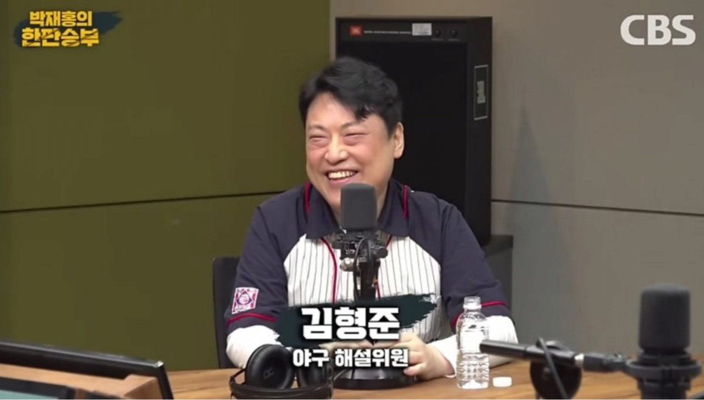
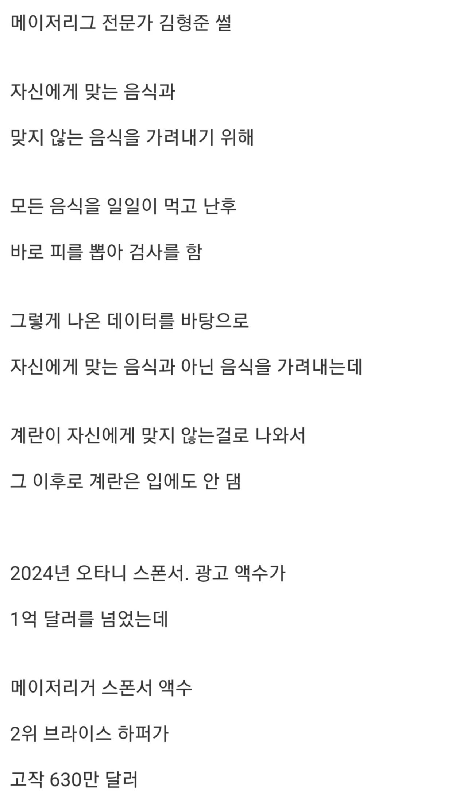
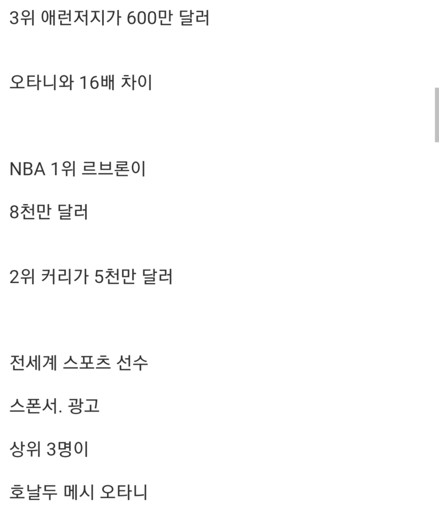
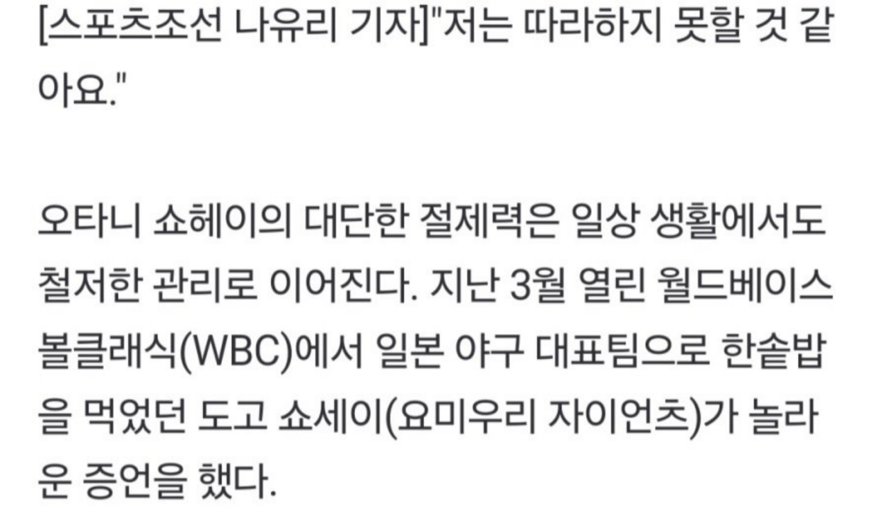
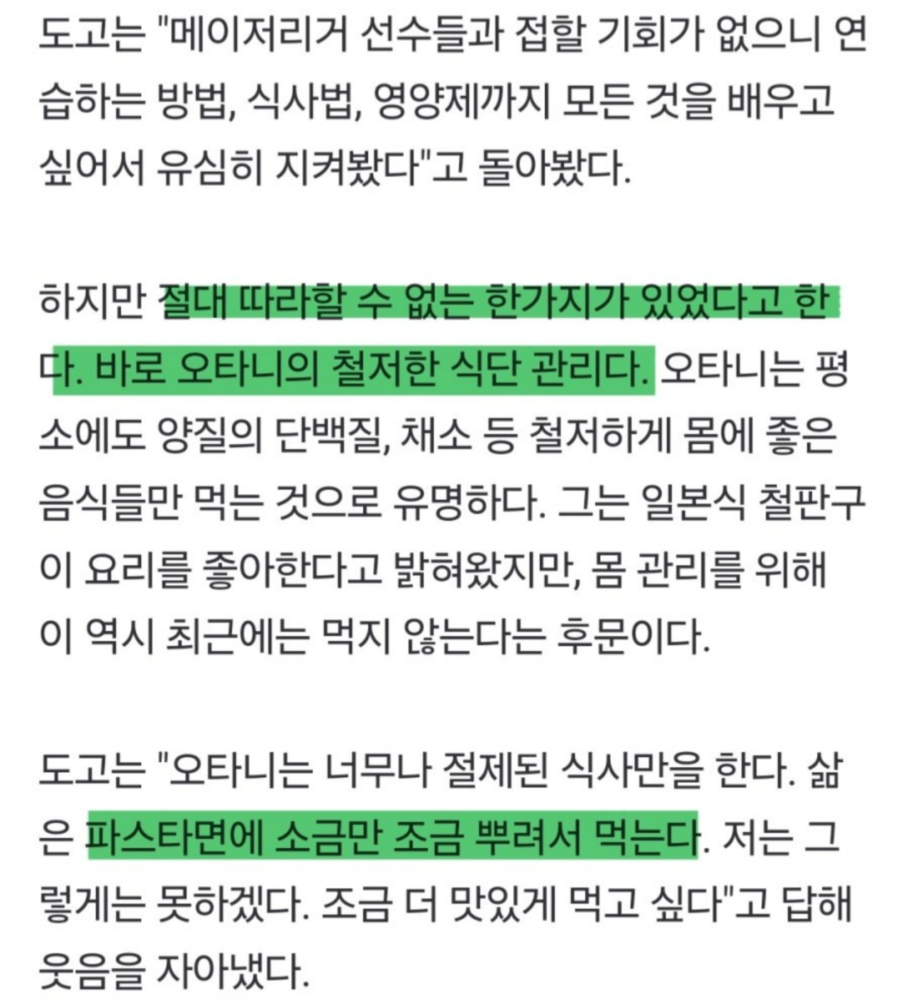
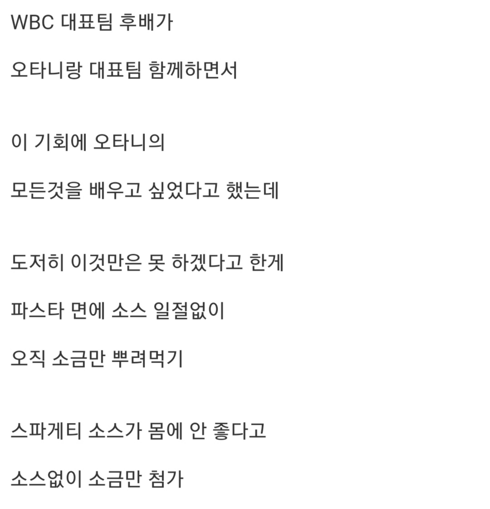
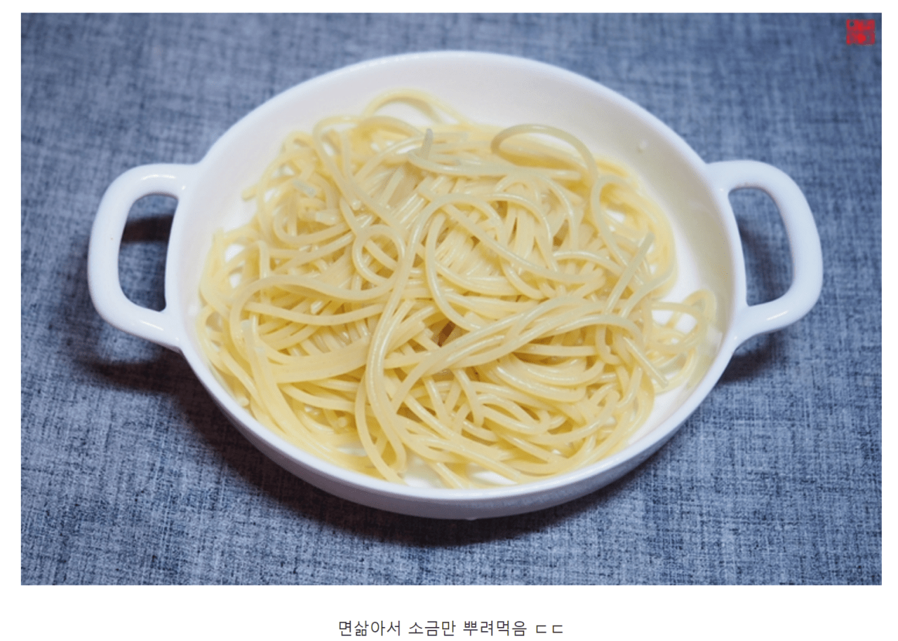
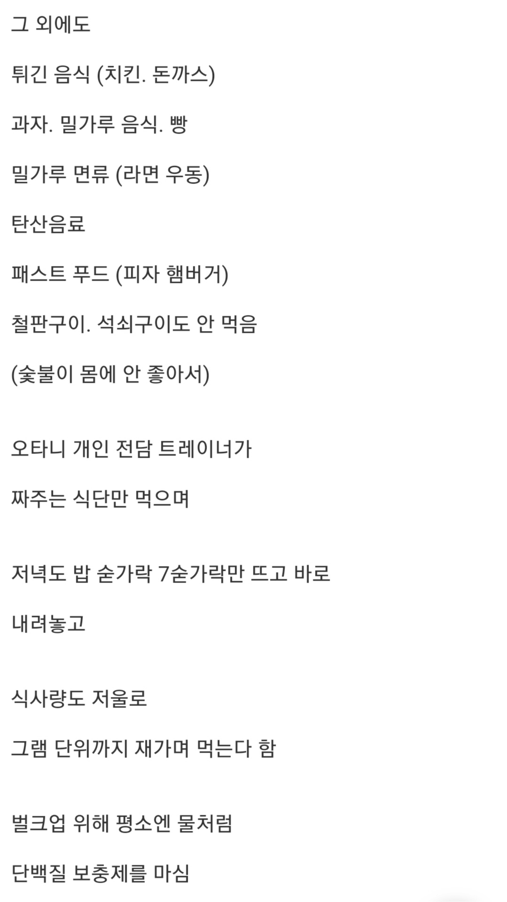
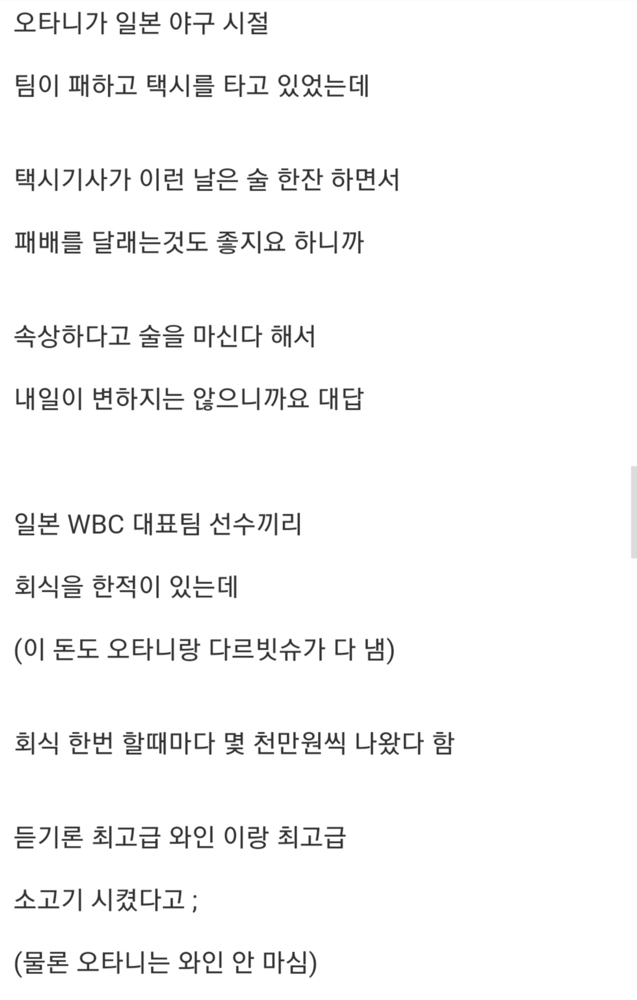
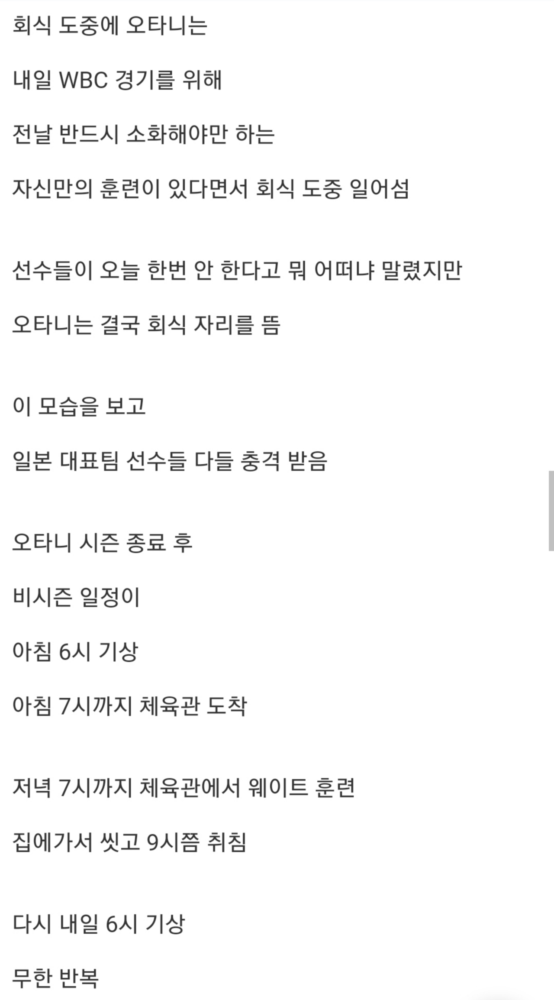
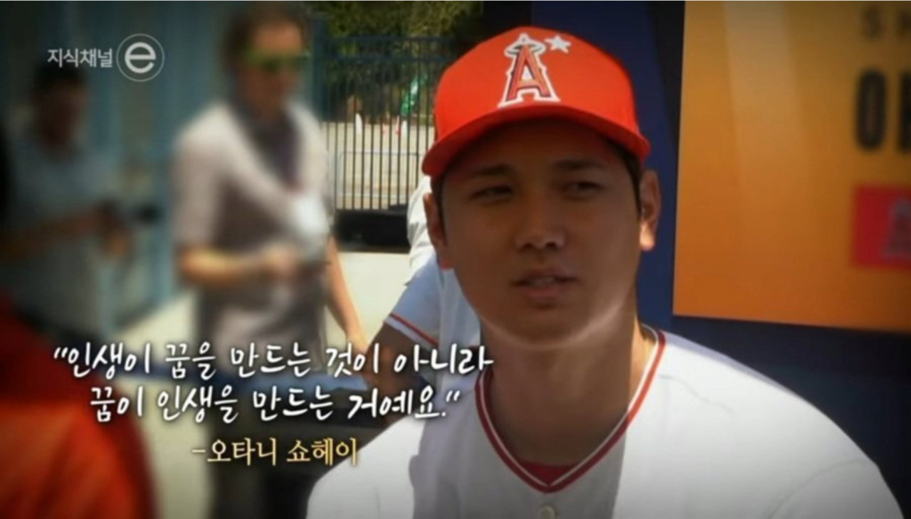
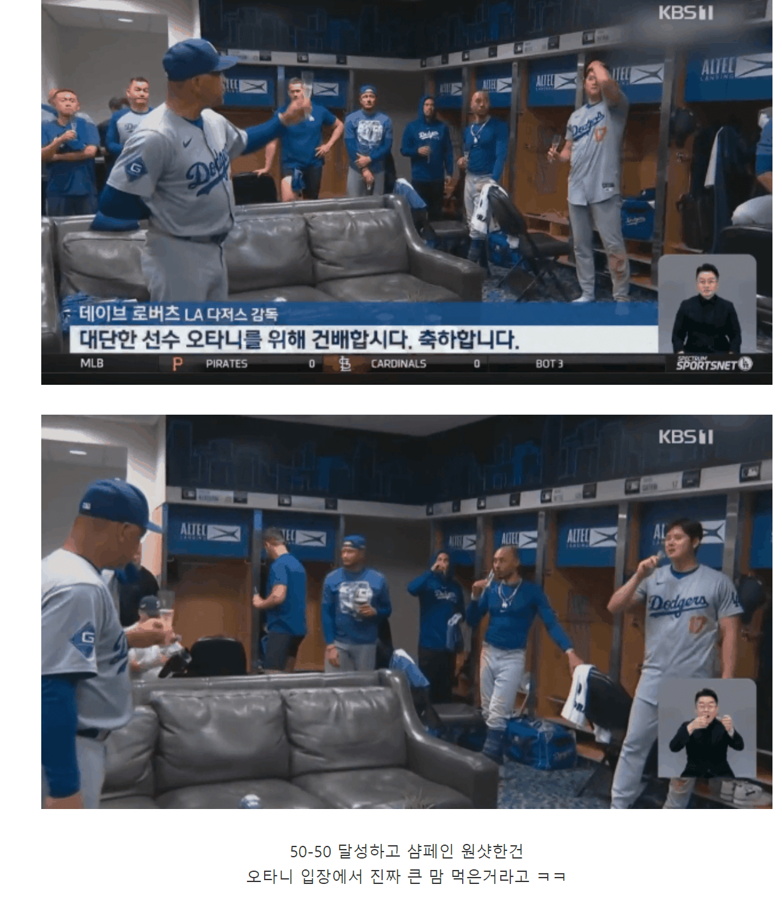












일본 가면 오만 곳에 오타니 박아놨더라ㅋㅋ
이런 선수도 육아가 힘들어서..
오히려 이정도로 규칙적인 생활을 하기 때문에 애가 울어서 패턴 깨지면 영향이 더 큰거아닐까 ㅋㅋ
시벌 어제 비비큐 황올 존나 때렸는데;;
괜찮아 넌 운동선수가 아니잖어
도박마!!
단백질 가루 물처럼 먹으면 통풍오던대 그래도 옆에 전문가가 있으니 별 상관없겠네
진짜 뭘 해도 성공했을 인간이다 존경스럽다 와
요즘은 집에서 애 보느라 저렇겐 안할걸
애 직접 돌본다더라
와 존나 대단하구나
야구하려고 사는 사람..
하지만 밤새 아이가 3시간 마다 깨서 우는데.....
아이 엄마도 신경이 날카로워 지는데...
저건 운동하는 사람들 대부분 하는거아닌가
그것도 직업으로 필요한거고
난 운동선수는 아니지만 몇년째 치킨 피자 인스턴트 안먹고
제한된 똑같은 식사만 몇년째 하고있는데
새벽부터 운동하고 끝나면 일하고
정해진 시간에 식사하고
가끔 치팅은 깨끗하고 건강한 채소와
기름기 적은 고기 잡곡밥
KBO에 있는 배불뚝이들은 뭔가요 그럼
적당한 관리도 아니고 저 글에 쓰여있을 정도는 프로들도 못 하는 정도인데.. 저런 사람들 손에 꼽음
오타니 평생 맛있는 음식 안 먹고 수천억 벌기 vs 맛있는거 먹고 그럭저럭 살기 중에 전자 골랐네 ㅋ
평생은 아니지. 은퇴하기까지니까. 앞으로 10년?은 남았네 ㅅㅂ ㄷㄷ
보여줄거 다 보여줬다고 생각함
이젠 아빠로 살아야겠는데;
강박증아니면 못한다
오타니가 은퇴하고 그동안 먹고 싶었던 음식 뽑아서 맛집 투어 다니는 거 유튜브 같은 걸로 안해주려나. 오타니 선수 개 좋아하면서 음식 편하게 먹는 거 나오면 팬들은 눈물바다 될 듯.
너 하고 윗 몇놈은 이걸 보고도 이해할 수 없다면, 나도 더 이상 너에게 해줄 말은 없다
https://youtu.be/98u3aw9hp6k?si=m0PeN6k3DlyXoP16
야알못이라면 이걸 보는게 더 좋겠다
https://youtu.be/UhNT2b5s6rU?si=vLYcPbt_Xi0OcRU8